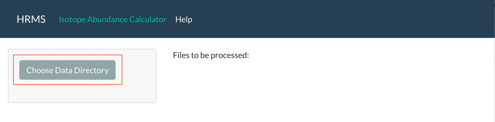
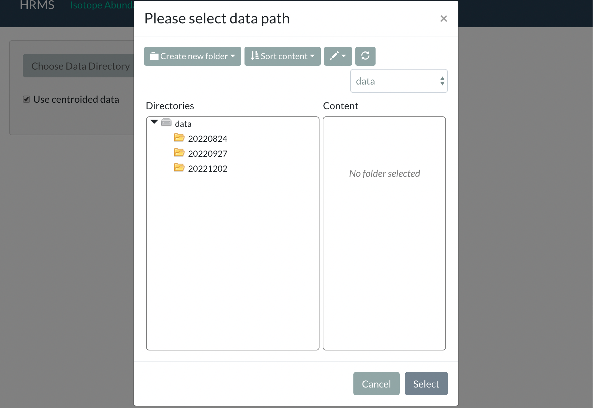
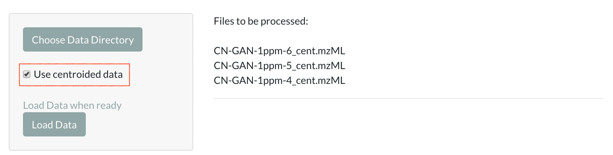
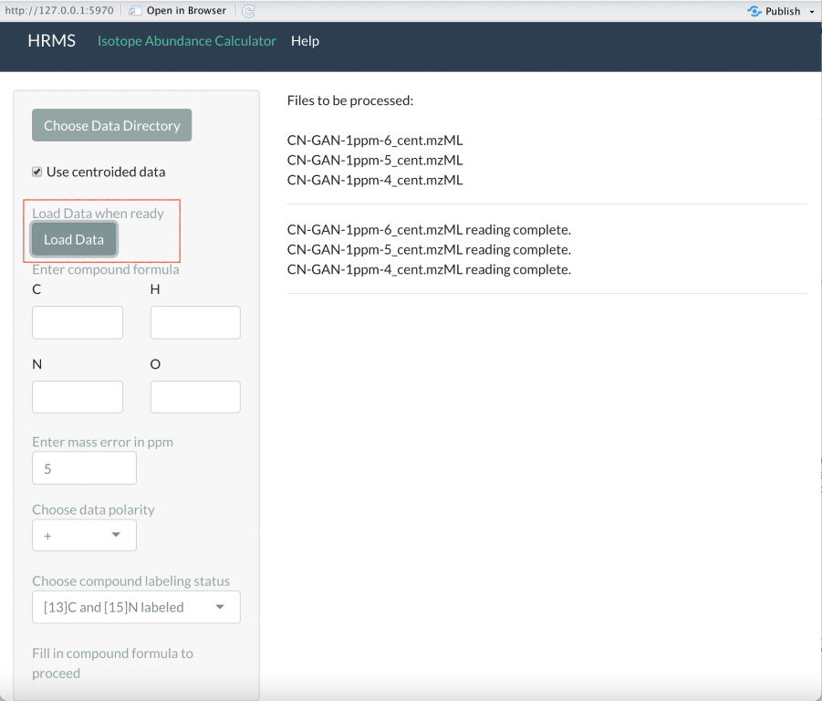
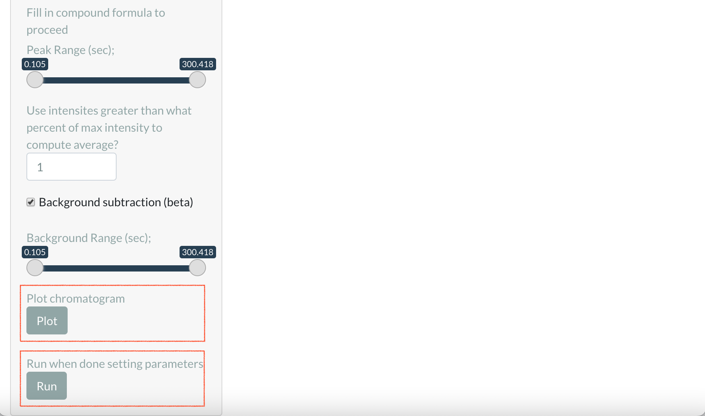
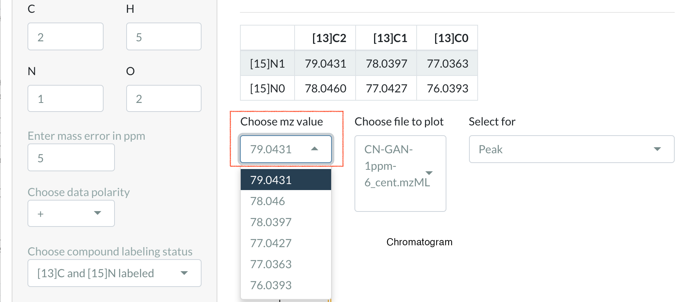
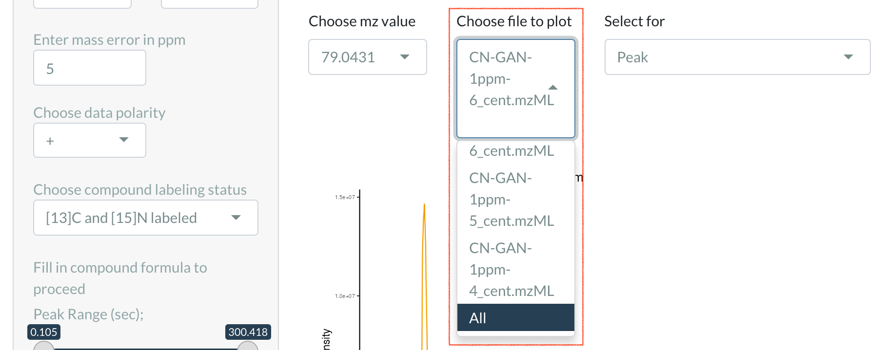
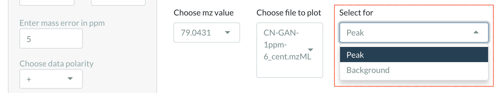
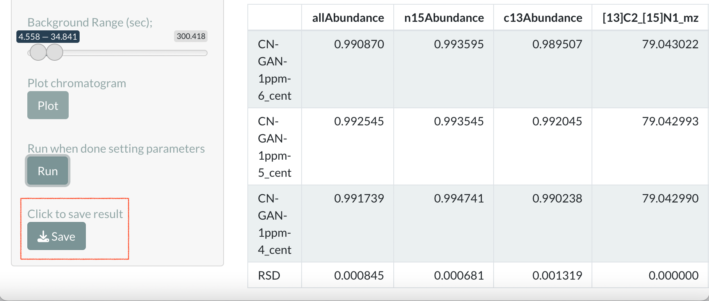
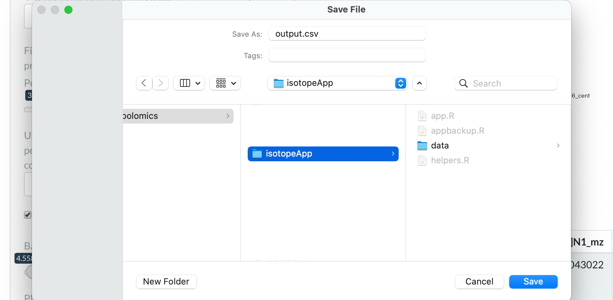

How to use the calculator
Overview
The app computes [13]C, [15]N, and combined abundances for doubly labeled compounds using .mzML data files as input, and outputs a table that contains the abundances, mz values, and intensities for all of the input files. The calculation requires several parameters to be entered, for which this app provides a convienient interface. This help pages aims to give an explanation of what the parameters mean and what values should be entered.
Walkthrough
Step 1:
The calculator has two panels, the side panel and the main panel. The side panel is used for entering parameters and clicking control buttons. The main panel is used for displaying results. Upon entering the app, the left panel displays a Choose Data Directory button. The main panel displays a line of text that is "Files to be processed". Click the Load Data button to open the file browser.

Step 2:
Open the file browser and select the folder containing the data files. Click on the folder and click the select button. Note that the data is not read until a Load Data button is clicked in later steps.

Step 3:
After choosing the data directory, the list of files that will be loaded and processed is printed on the main panel, and a checkbox appears under the Choose Data Directory button to filter the list of files for centroided or non-centroided data. The uncentroided data is in profile mode, while the centroided data is in centroid mode. The centroided data is smaller and takes less time to compute, but may yield different results from the uncentroided counterpart due to loss of information. If the folder does not contain centroided files, centroided versions of the original file will be computed automatically, saved, and loaded.

Step 4:
Load the data with the Load Data button after selecting whether to use centroided data or not. After a while, the loaded file names will be printed on the main panel for further confirmation. At the same time, more input fields will be displayed down the side panel. All fields must be filled to proceed to the next section.
The C, N, H, O fields are used to input compound formulas. As of right now, other elements are not supported. Integer values should be entered.
The ppm field is used to select how many ppms within the target mz value should be searched to get the corresponding intensity. The value defaults to 5 ppm for HRMS data, although the peaks on the mz dimension is typically around only 1 ppm.
The polarity option determines whether the data is obtained in positive or negative mode.
The labeled option determines whether the compound is singly labeled by C or N or doubly labeled.

Step 5:
The peak range and background range sliders show after all the fields above are filled. The peak range should cover the whole peak, while the background should be a range before or after the peak in which the chromatogram is relatively flat. If doing background subtraction is not desired, the Background Subtraction checkbox can be unchecked.
After setting the ranges, the calculation is ready to start. Click the Run button to start the calculation. Alternatively, the retention time and background ranges can be selected interactively on the chromatogram. Click the Plot button to generate the plot.

Step 6
This part explains the controls for the chromatogram. To learn about viewing and downloading result, skip to step 7.
Step 6-1
A table of mz values will be displayed on the main panel after the Plot button is clicked. The table shows mz values corresponding to different labeling modes. The table provides reference for the Choose mz value dropdown list below. Here you can choose the mz value to display the chromatogram for.

Step 6-2
You can use the Choose file to plot dropdown list to select which file to display the chromatogram for. There is also an "All" option to display a combination of all the files.

Step 6-3
By dragging on the plot, you can interactively select the peak and the background ranges. Use the Select for dropdown list to select which range to update.

Step 7
After the calculation is finished, a table will display the results on the main panel, and the RSD (relative standard deviation) of each column will be displayed on the last row. Click the Save button to save the result as a .csv file.

Step 8
Clicking the save button opens the file browser. Choose file name and location to save the result.
